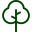

A Mata Atlântica é um bioma que cobria uma área de 15% do território brasileiro, originalmente, isso equivale a 1,3 milhões de km²
A intensa ocupação e exploração reduziram drasticamente sua extensão, restando apenas cerca de 12,4% de sua cobertura original onde 80% disso estão localizados em áreas privadas

Ocorre, principalmente, em solos como Latossolos (solos minerais, profundos, bem drenados e altamente intemperizados) e Argissolos, ambos Amarelos e Vermelho Amarelos.
A Araucaria angustifolia é a principal espécie florística dessa formação. É conhecida como pinheiro-do-paraná ou pinheirobrasileiro.Tem maior presença no paraná compondo 40% de suas terras
São formações de ambientes menos úmidos do que aqueles onde se desenvolve a floresta ombrófila densa. Ocupam ambientes que transitam entre a zona úmida costeira e o ambiente semiárido.
Embora a ampla quantidade de espécie animal, a mais conhecida é com certeza o mico-leão-dourado, espécie hoje considerada símbolo desse bioma - 573 espécies de animais em risco de extinção - 8 oficialmente extintas
Além dessa podesmos destacar outras espécies que habitam a mata, como sapo-pingo-de-ouro, porcodo-mato, macaco-guicó, pintor-verdadeiro, macuco, onça-pintada, harpia, tucano, papagaio-de-cararoxa, musiquinha e sabiá-laranjeira.